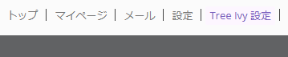
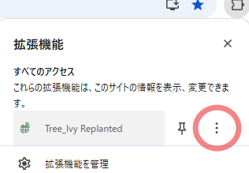

チュートリアルから設定画面の開き方、 設定の内容まで
インストール時はスタログ初回訪問時にチュートリアルが表示されます。
基本的な機能はこのチュートリアルで説明していますので、初めての方はぜひご覧ください。
チュートリアルは設定の「高度な設定」＞「チュートリアルを再度表示する」からいつでも再表示できます。
拡張機能が入っていると、スタログのカレンダー画面の右上メニューに項目が増えます。
このリンク、あるいはほかの拡張機能同様にブラウザの拡張機能アイコンからオプションを開くことができます。


設定画面では、表示のカスタマイズや通知の設定など、さまざまなオプションを調整できます。
例えば、カレンダーに出るチャートの表示方法や出席ボタンの配置を変更することができます。
設定の右上に公式ディスコードに参加するリンクになってるアイコンがあります。
ここから参加して、質問や要望、バグ報告などを行うことができます。
せっかくだからここからも参加できるリンクを置いておきますね。
公式ディスコードに参加する